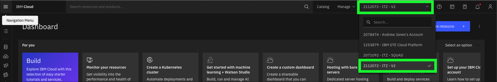

DemoPreparation VSI
This demonstration requires two IBM Technology Zone (ITZ) environments: - Custom ROKS requests: https://techzone.ibm.com/collection/custom-roks-vmware-requests - IBM Cloud VSI (Classic): https://techzone.ibm.com/collection/base-images
At this point, all users should have completed the steps in the IBM Sterling Data Exchange Level 3 learning plan to reserve the two environments as described in the IBM Sterling Data Exchange Level 3 Introduction video. Before proceeding, validate that both the reservations have been fully provisioned and are in the Ready state in ITZ. If not, please complete those steps before proceeding.
The following steps must be performed before delivering the demonstration. These steps should be performed well in advance of starting an actual client demonstration as it will take approximately 1 hour for all steps to complete.
Accept invitation to join the ITZ IBM Cloud account for the Custom ROKS reservation
- Open the You are invited to join an account in IBM Cloud email received from IBM Cloud and click the Join now link.

- In the browser window that opens, click the Join Account button.

Follow the steps to login to IBM Cloud.
- On the IBM Cloud Dashboard set the current account to 2112072 - ITZ - V2.

Not seeing 2112072 - ITZ - V2?
It is possible ITZ provisioned the OpenShift cluster in a different IBM Cloud account. Select the account specified in the ITZ reservation.

- Click the OpenShift
 icon in the left-hand menu bar.
icon in the left-hand menu bar.

- Click Clusters.

- Click the OpenShift cluster name in the table.

Note: the cluster name will be different than seen in the above image.
- Click the OpenShift web console button.

At this time, a page like the one below should be in a new browser window or tab.

Leave this window open. It will be used again later.
Download the SSH key from the IBM Cloud VSI (Classic) reservations
-
Open a new browser window or tab to the ITZ
My reservations page. -
Click on the IBM Cloud VSI (Classic) reservation tile.
- Click the Download SSH Key button.
Take note
Take note of the Public IP, SSH Port, and Username fields in the reservation. These values will be needed later.
By default, most browsers will utilize the default Downloads directory in the users home directory.
Connect to the Virtual Server Instance (VSI)
The next step must be performed on the users local computer. The directions below are specific to users with a Mac computer (MacOS). All instructions listed here should be the same for users running on Linux machines.
For Windows machines users.
Windows users will need to utilize a ssh client such as putty. XXXXXXX
- Open a terminal on local desktop computer using Mac Spotlight (press the command key and the space bar).

- Enter the following command to change to the Downloads directory where the ITZ private key was downloaded.
- Verify the SSH key file is found in the Downloads directory.
Example output
-rw-r--r--@ 1 andrewjones staff 3243 Oct 18 13:12 pem_ibmcloudvsi_download.pem
No such file or directory?
If the file was not found, verify the default download directory of the browser used in step 11 above and try again adjusting for correct download directory. It is also possible the SSH key file name was not saved as pem_ibmcloudvsi_download.pem. Check the Downloads directory for the most recent file names.
- Change the permissions of the SSH key file.
- Verify the SSH key file has the proper permissions.
Example output
-rw-------@ 1 andrewjones staff 3243 Oct 18 13:12 pem_ibmcloudvsi_download.pem
- Use ssh to connect to the remote VSI and enter yes when prompted to continue.
Warning
Substitute the strings PORT, USER, and PUBLICIP with the values in the VSI reservation as illustrated in the image in step 11 above.
ssh -i pem_ibmcloudvsi_download.pem -p SSHPORT USERNAME@PUBLICIP
Example output
MacBook-Pro-2:Downloads andrewjones$ ssh -i pem_ibmcloudvsi_download.pem -p 2223 itzuser@169.59.6.211
The authenticity of host '[169.59.6.211]:2223 ([169.59.6.211]:2223)' can't be established.
ED25519 key fingerprint is SHA256:YAN8U3PtpCzdhqc67F8ZQWlJjQgBV0DOi7LvZgDEtws.
This key is not known by any other names
Are you sure you want to continue connecting (yes/no/[fingerprint])? yes
Warning: Permanently added '[169.59.6.211]:2223' (ED25519) to the list of known hosts.
Welcome to Ubuntu 20.04.4 LTS (GNU/Linux 5.4.0-124-generic x86_64)
...
**Long output - truncated in this example**
...
To run a command as administrator (user "root"), use "sudo
Install all required IBM Cloud and other tools
- Use the following command to install all required tools.
Example output
Updating the operating system. Wait!
Installing Docker. Wait!
Adding user to docker group. Wait!
Setting up docker to start at reboot. Wait!
Installing common utilities. Wait!
Installing ibmcloud utility. Wait!
Installing Helm. Wait!
Installing OpenShift oc utility. Wait!
Installing Kubernetes kubectl. Wait!
cleaning up. Wait!
All done.
Client Version: 4.10.0
version.BuildInfo{Version:"v3.10.1", GitCommit:"9f88ccb6aee40b9a0535fcc7efea6055e1ef72c9", GitTreeState:"clean", GoVersion:"go1.18.7"}
Flag --short has been deprecated, and will be removed in the future. The --short output will
become the default.
Client Version: v1.25.3
Kustomize Version: v4.5.7
ibmcloud version 2.11.1+c18277d-2022-09-23T21:49:24+00:00
Reboot your instance now: sudo shutdown -r now
If the reboot message is not seen
If the reboot message is not seen in the output of the previous command a problem occurred. Re-run the last command. When doing so, ignore error messages about items already installed.
- Restart the VSI.
Example output
Connection to PUBLICIP closed by remote host. Connection to PUBLICIP closed.
Note, it will take a few minutes for the VSI to reboot. Wait 2 or 3 minutes and then continue the steps below.
Download the B2Bi installation scripts
- Use ssh to re-connect to the remote VSI.
Warning
Substitute the strings PORT, USER, and PUBLICIP with the values in the VSI reservation as illustrated in the image in step 11 above.
ssh -i pem-ibmcloudvsi-download.pem -p SSHPORT USERNAME@PUBLICIP
Example output
MacBook-Pro-2:Downloads andrewjones$ ssh -i pem_ibmcloudvsi_download.pem -p 2223 itzuser@169.59.6.211 Welcome to Ubuntu 20.04.5 LTS (GNU/Linux 5.4.0-124-generic x86_64)
- Documentation: https://help.ubuntu.com
- Management: https://landscape.canonical.com
- Support: https://ubuntu.com/advantage
System information as of Tue Oct 18 19:58:23 UTC 2022
System load: 0.65 Users logged in: 0 Usage of /: 3.0% of 97.26GB IPv4 address for docker0: 172.17.0.1 Memory usage: 7% IPv4 address for eth0: 10.36.166.233 Swap usage: 0% IPv4 address for eth1: 169.59.6.211 Processes: 123
8 updates can be applied immediately. 8 of these updates are standard security updates. To see these additional updates run: apt list --upgradable
New release '22.04.1 LTS' available. Run 'do-release-upgrade' to upgrade to it.
Last login: Tue Oct 18 19:47:57 2022 from 70.114.143.247
- Create a new directory B2Bi installation scripts.
- Set the PROJECT_DIR environment variable.
- Change directories to PROJECT_DIR.
- Download the B2Bi installation script.
wget -O rapid-lab-b2bi-newdb-61051.zip https://github.com/IBM/SalesEnablement-SterlingDataExchange-L3/blob/main/tools/rapid-lab-b2bi-newdb-61051.zip?raw=true
Example output
--2022-10-18 20:12:56-- https://github.com/IBM/SalesEnablement-SterlingDataExchange-L3/blob/main/tools/rapid-lab-b2bi-newdb-61051.zip?raw=true
Resolving github.com (github.com)... 140.82.113.4
Connecting to github.com (github.com)|140.82.113.4|:443... connected.
HTTP request sent, awaiting response... 302 Found
Location: https://github.com/IBM/SalesEnablement-SterlingDataExchange-L3/raw/main/tools/rapid-lab-b2bi-newdb-61051.zip [following]
--2022-10-18 20:12:56-- https://github.com/IBM/SalesEnablement-SterlingDataExchange-L3/raw/main/tools/rapid-lab-b2bi-newdb-61051.zip
Reusing existing connection to github.com:443.
HTTP request sent, awaiting response... 302 Found
Location: https://raw.githubusercontent.com/IBM/SalesEnablement-SterlingDataExchange-L3/main/tools/rapid-lab-b2bi-newdb-61051.zip [following]
--2022-10-18 20:12:57-- https://raw.githubusercontent.com/IBM/SalesEnablement-SterlingDataExchange-L3/main/tools/rapid-lab-b2bi-newdb-61051.zip
Resolving raw.githubusercontent.com (raw.githubusercontent.com)... 185.199.110.133, 185.199.111.133, 185.199.108.133, ...
Connecting to raw.githubusercontent.com (raw.githubusercontent.com)|185.199.110.133|:443... connected.
HTTP request sent, awaiting response... 200 OK
Length: 4061226 (3.9M) [application/zip]
Saving to: ‘rapid-lab-b2bi-newlab-61051.zip’
rapid-lab-b2bi-newlab-61051.zip 100%[=========================================================================================================================================>] 3.87M --.-KB/s in 0.03s
2022-10-18 20:12:57 (147 MB/s) - ‘rapid-lab-b2bi-newlab-61051.zip’ saved [4061226/4061226]
- Unzip the installation script.
Example output
Archive: rapid-lab-b2bi-newdb-61051.zip
inflating: deploy_mq.sh
inflating: edited-values.yaml
inflating: prepare_db2.sh
inflating: deploy_db2.sh
inflating: README.md
inflating: COPYING
inflating: env.sh
inflating: deploy_b2bi.sh
inflating: db2jcc4.jar
Authenticate to the OpenShift cluster
For the next steps, the OpenShift login command to authenticate to the cluster in the ITZ reservation must be retrieved an executed.
- Switch to the OpenShift web console browser window or tab.
- Click the IAM identity drop-down menu at top left of the OpenShift web console and click the Copy Login Command option.

- Click the Display token link.

- Copy and paste the string in the Log in with this token field.

- Switch to the SSH terminal window from earlier.
- Paste the oc login command line copied in step 29 into the terminal window and press enter.
Example output
itzuser@itz-2700039nft-srv4:~/b2bi$ oc login --token=sha256~XXXXXXXXXXXXXXXXXX --server=https://c103-e.us-south.containers.cloud.ibm.com:31501
Logged into "https://c103-e.us-south.containers.cloud.ibm.com:31501" as "IAM#andrew@jones-tx.com" using the token provided.
You have access to 66 projects, the list has been suppressed. You can list all projects with 'oc projects'
Using project "default".
Welcome! See 'oc help' to get started.
itzuser@itz-2700039nft-srv4:~/b2bi$
- Run the environment setup and DB2 deploy scripts.
Example output
Now using project "db2" on server "https://c109-e.us-east.containers.cloud.ibm.com:30720".
You can add applications to this project with the 'new-app' command. For example, try:
oc new-app rails-postgresql-example
to build a new example application in Ruby. Or use kubectl to deploy a simple Kubernetes application:
kubectl create deployment hello-node --image=k8s.gcr.io/e2e-test-images/agnhost:2.33 -- /agnhost serve-hostname
serviceaccount/db2 created clusterrole.rbac.authorization.k8s.io/system:openshift:scc:privileged added: "db2" secret/db2-secret created service/db2-ci created service/db2-lb created statefulset.apps/db2 created
Wait 5 minutes...
Wait approximately 5 minutes for the DB2 containers to start loading in OpenShift before executing the next step.
Monitor events in OpenShift web console
Use the OpenShift web console to monitor the DB2 project events and pod creation.


- Verify DB2 is up and running in the OpenShift cluster.
Failure
If no output is seen from the above command, or if it returns the message: Error from server (BadRequest): container "db2" in pod "db2-0" is waiting to start: ContainerCreating wait and rerun oc logs -f ${DB2_NAME}-0 until the output starts steaming as shown in the example output below.
Example output
(*) Previous setup has not been detected. Creating the users...
(*) Creating users ...
(*) Creating instance ...
DB2 installation is being initialized.
Total number of tasks to be performed: 4 Total estimated time for all tasks to be performed: 309 second(s)
Task #1 start Description: Setting default global profile registry variables Task #1 end
Task #2 start Description: Initializing instance list Estimated time 5 second(s) Task #2 end
Task #3 start Description: Configuring DB2 instances Estimated time 300 second(s) Task #3 end
Task #4 start Description: Updating global profile registry Estimated time 3 second(s) Task #4 end
...
**Long output - truncated in this example**
...
2022-10-18-16.44.43.180954+000 I33681E386 LEVEL: Warning PID : 15858 TID : 139996146354048 PROC : db2start
INSTANCE: db2inst1 NODE : 000
HOSTNAME: db2-0
FUNCTION: DB2 UDB, base sys utilities, sqleReleaseStStLockFile, probe:16078
MESSAGE : Released lock on the file:
DATA #1 : String, 50 bytes
/database/config/db2inst1/sqllib/ctrl/db2strst.lck
Do not proceed until...
Do not proceed to the next step until the following line appears in the output:
/database/config/db2inst1/sqllib/ctrl/db2strst.lck
- Stop the oc logs command by entering Ctrl+c on the keyboard.
Example output
... FUNCTION: DB2 UDB, base sys utilities, sqleReleaseStStLockFile, probe:16078
MESSAGE : Released lock on the file:
DATA #1 : String, 50 bytes
/database/config/db2inst1/sqllib/ctrl/db2strst.lck
^C
itzuser@itz-2700039nft-srv4:~/b2bi$
- Prepare the DB2 instance running in OpenShift.
Note, this script does not generate output.
- Remotely connect to the DB2 container running in OpenShift.
Example output
Last login: Tue Oct 18 20:47:33 UTC 2022
[db2inst1@db2-0 ~]$
Note, a remote connection is now open to the DB2 container running in OpenShift as shown by the change in the command prompt to: [db2inst1@db2-0 ~]$
- Run the db2reg.sh script.
Example output
DB20000I The UPDATE DATABASE MANAGER CONFIGURATION command completed successfully.
DB20000I The UPDATE DATABASE MANAGER CONFIGURATION command completed successfully.
DB20000I The UPDATE DATABASE MANAGER CONFIGURATION command completed successfully.
DB20000I The UPDATE DATABASE MANAGER CONFIGURATION command completed successfully.
DB20000I The UPDATE DATABASE MANAGER CONFIGURATION command completed successfully.
DB20000I The UPDATE DATABASE MANAGER CONFIGURATION command completed successfully.
DB20000I The UPDATE DATABASE MANAGER CONFIGURATION command completed successfully.
DB20000I The UPDATE DATABASE MANAGER CONFIGURATION command completed successfully.
- Create the B2Bi tables in DB2.
This will take ~5 minutes
This command will take approximately 5 minutes to complete.
Example output
CREATE DATABASE B2BIDB AUTOMATIC STORAGE YES USING CODESET UTF-8 TERRITORY US COLLATE USING IDENTITY PAGESIZE 4096 DFT_EXTENT_SZ 32
DB20000I The CREATE DATABASE command completed successfully.
CONNECT TO B2BIDB
Database Connection Information
Database server = DB2/LINUXX8664 11.5.5.1 SQL authorization ID = DB2INST1 Local database alias = B2BIDB
UPDATE DATABASE CONFIG USING STMT_CONC LITERALS
DB20000I The UPDATE DATABASE CONFIGURATION command completed successfully.
... Long output - truncated in this example ...
CREATE USER TEMPORARY TABLESPACE UTEMP4KTS IN DATABASE PARTITION GROUP IBMDEFAULTGROUP PAGESIZE 4 K MANAGED BY AUTOMATIC STORAGE EXTENTSIZE 32 BUFFERPOOL UTEMP4KBP FILE SYSTEM CACHING
DB20000I The SQL command completed successfully.
CONNECT RESET
DB20000I The SQL command completed successfully.
- Run the final DB2 update script.
Example output
Database Connection Information
Database server = DB2/LINUXX8664 11.5.5.1 SQL authorization ID = DB2INST1 Local database alias = B2BIDB
DB20000I The SQL command completed successfully. DB20000I The TERMINATE command completed successfully. DB20000I The FORCE APPLICATION command completed successfully. DB21024I This command is asynchronous and may not be effective immediately.
DB20000I The DEACTIVATE DATABASE command completed successfully.
10/18/2022 16:53:39 0 0 SQL1064N DB2STOP processing was successful.
SQL1064N DB2STOP processing was successful.
10/18/2022 16:53:41 0 0 SQL1063N DB2START processing was successful.
SQL1063N DB2START processing was successful.
- Exit the connection to the DB2 container in OpenShift.
Example output
logout itzuser@itz-2700039nft-srv4:~/b2bi$
Notice the command line prompt has changed back to the prompt for the VSI connection.
- Deploy MQ to OpenShift.
Example output
Now using project "mq" on server "https://c109-e.us-east.containers.cloud.ibm.com:30720".
You can add applications to this project with the 'new-app' command. For example, try:
oc new-app rails-postgresql-example
to build a new example application in Ruby. Or use kubectl to deploy a simple Kubernetes application:
kubectl create deployment hello-node --image=k8s.gcr.io/e2e-test-images/agnhost:2.33 -- /agnhost serve-hostname
serviceaccount/mq created clusterrole.rbac.authorization.k8s.io/system:openshift:scc:privileged added: "mq" service/mq-data created service/mq-web created
W1018 16:54:39.757566 34060 shim_kubectl.go:58] Using non-groupfied API resources is deprecated and will be removed in a future release, update apiVersion to "route.openshift.io/v1" for your resource
route.route.openshift.io/mq-web created
secret/mq-secret created
statefulset.apps/mq created
Important
Note, the next steps require editing of a file using the vi editor on the VSI. If you are not familiar with the vi editor, it is strongly recommend to watch the following video before proceeding. There is no audio for this video.
- Open the vi editor.
- Open the IBM Entitlement key page here.
Note, re-authentication to ibm.com may be required.
- If an entitlement key does not already exist, click Add new key.
- Click the Copy button.

- Return to the terminal and paste the copied entitlement key between the quotes on the export APIKEY="" line.
- Enter your e-mail address between the quotes on the export EMAIL="" line.
- Verify the env.sh file looks like the example output below.
Example output
itzuser@itz-2700039nft-srv4:~/b2bi$ cat env.sh #!/usr/bin/bash ## Locate your APIKEY (Entitlement Key For Container Software) ## here: https://myibm.ibm.com/products-services/containerlibrary ## Requires IBM ID and permission. export PROJECT_NAME="b2bi" export PROJECT_DIR="$HOME/b2bi" export DB2_NAME="db2" export MQ_NAME="mq" export APIKEY="XXXXXXXXXXXXXXXXXXXXXXXXXXXXXXXXXXXXXXXXXXXXXXXXXXXXXX" export EMAIL="andrew@jones-tx.com" itzuser@itz-2700039nft-srv4:~/b2bi$
- Deploy the B2Bi containers on OpenShift.
This will take approximately 60 minutes
This command will take approximately 60 minutes to complete.
Monitor events in OpenShift web console
Use the OpenShift web console to monitor the b2bi project events and pod creation.


Example output
Now using project "b2bi" on server "https://c103-e.us-south.containers.cloud.ibm.com:31501".
You can add applications to this project with the 'new-app' command. For example, try:
oc new-app rails-postgresql-example
to build a new example application in Ruby. Or use kubectl to deploy a simple Kubernetes application:
kubectl create deployment hello-node --image=k8s.gcr.io/e2e-test-images/agnhost:2.33 -- /agnhost serve-hostname
persistentvolumeclaim/ibm-cloud-file-nfs-storage-pvc created clusterrole.rbac.authorization.k8s.io/system:openshift:scc:anyuid added: "default" deployment.apps/ibm-cloud-file-nfs-storage-pod created Defaulted container "ibm-cloud-file-nfs-storage-pod" out of: ibm-cloud-file-nfs-storage-pod, permissionsfix (init)
... Long output - truncated in this example ...
NAME: sterling-fg
LAST DEPLOYED: Wed Oct 19 17:11:30 2022
NAMESPACE: b2bi
STATUS: deployed
REVISION: 1
NOTES:
Please wait while the application is getting deployed.
-
Run the below command to check the status of application server replica sets. At least 1 replica must be in 'READY' state.
kubectl get replicasets -l release=sterling-fg -n b2bi
-
Run the below command to check the status of the application server pods for the release.
kubectl get pods -l release=sterling-fg -n b2bi -o wide
To view the logs for a pod, run the below command.
kubectl logs <pod name> -n b2bi
- Access the application by running the following url
That concludes the setup of the environment. Proceed to the next part of the demonstration guide to configure B2Bi.